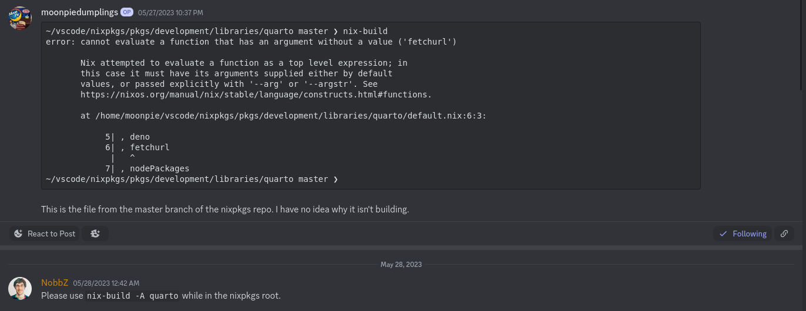
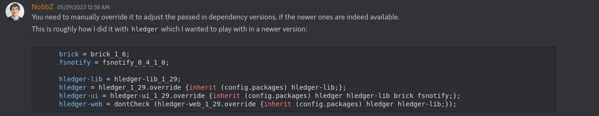

This project is complete, but I have to extract all my notes and put them onto this blog, whiich I haven’t finished doing yet.
What is quarto?
To explain quarto, I first have to explain jupyter notebooks, and quarto’s predecessor, fastpages.
Fastpages is a blogging platform built on jekyll, a static site generator. Static sites are websites that do not connect to a backend server, the user’s browser does all the rendering. Static site generators do all the hard work of creating these, by converting a very human readable format, like markdown, to pretty looking html, which is what browsers render.
Fastpages adds onto the features of jekyll, by adding support for juptyer notebooks. Jupyter is a technology that allows users to combine code, multimedia, and text into a single document, for any purposes that one might use it. It’s usually popular for data science, as code is used to generate diagrams, but I really like it for testing snippets of code, as you can have multiple pieces of code in one document, and then run and debug them independently of eachoter. Fastpagess can convert all of this, even automatically running code and creating any interactive elements, and then putting it all up on the internet as a static site.
Fastpages is also deprecated. On the github page, which is archived, it recommends you switch to quarto.
Quarto adds more features on top of fastpages, while also removing some features. Fastpages is primarily designed for blogging, whereas quarto also has support for generating books, pdf’s, and websites.
However, quarto lacks some features, as it it uses it’s own static site generator, rather than jekyll. The biggest and most noticable one, is the Liquid template language that my computer science teacher uses to dynamically render his schedule page.
But for my purposes, quarto works fine. This blogpost you are reading, was generated using quarto.
What is nix?
Nix is multiple things. Nix is a linux distribution, an package repository, a package manager, a programming language, and a configuration as code system.
Right now, I am trying to use it as a package manager — specifically, to give myself the quarto tool.
I’ve selected nix because it focuses on reproducible builds, across Mac, and Linux and x86_64, and arm64. This enables a multitude of devices to get packages with an identical configuration to me.
Using Nix
{ pkgs ? import <nixpkgs> {} } :
pkgs.mkShell {
packages = with pkgs; [ python310Full quarto jupyter pandoc deno ];
}This is a sample shell.nix file. If you run the nix-shell command line tool while in the same working directory, or using the filename as an argument, it will use this bit of nix code to create an shell environment for you.
Nix is a functional programming langauge. Unlike a language like python or java, where everything is an object, in nix, everything is a function. The colon : creates a
The above shell.nix works great. However, it installs an older version of quarto, 1.2, as only an older version of quarto is packaged in the nixpkgs repository. I want the newest version, 1.3.
Here is the code used to create the quarto package, called a derivation:
Show derivation
{ stdenv
, lib
, pandoc
, esbuild
, deno
, fetchurl
, nodePackages
, rWrapper
, rPackages
, extraRPackages ? []
, makeWrapper
, python3
, extraPythonPackages ? ps: with ps; []
}:
stdenv.mkDerivation rec {
pname = "quarto";
version = "1.2.475";
src = fetchurl {
url = "https://github.com/quarto-dev/quarto-cli/releases/download/v${version}/quarto-${version}-linux-amd64.tar.gz";
sha256 = "sha256-oyKjDlTKt2fIzirOqgNRrpuM7buNCG5mmgIztPa28rY=";
};
nativeBuildInputs = [
makeWrapper
];
patches = [
./fix-deno-path.patch
];
postPatch = ''
# Compat for Deno >=1.26
substituteInPlace bin/quarto.js \
--replace 'Deno.setRaw(stdin.rid, ' 'Deno.stdin.setRaw(' \
--replace 'Deno.setRaw(Deno.stdin.rid, ' 'Deno.stdin.setRaw('
'';
dontStrip = true;
preFixup = ''
wrapProgram $out/bin/quarto \
--prefix PATH : ${lib.makeBinPath [ deno ]} \
--prefix QUARTO_PANDOC : ${pandoc}/bin/pandoc \
--prefix QUARTO_ESBUILD : ${esbuild}/bin/esbuild \
--prefix QUARTO_DART_SASS : ${nodePackages.sass}/bin/sass \
--prefix QUARTO_R : ${rWrapper.override { packages = [ rPackages.rmarkdown ] ++ extraRPackages; }}/bin/R \
--prefix QUARTO_PYTHON : ${python3.withPackages (ps: with ps; [ jupyter ipython ] ++ (extraPythonPackages ps))}/bin/python3
'';
installPhase = ''
runHook preInstall
mkdir -p $out/bin $out/share
rm -r bin/tools
mv bin/* $out/bin
mv share/* $out/share
runHook preInstall
'';
meta = with lib; {
description = "Open-source scientific and technical publishing system built on Pandoc";
longDescription = ''
Quarto is an open-source scientific and technical publishing system built on Pandoc.
Quarto documents are authored using markdown, an easy to write plain text format.
'';
homepage = "https://quarto.org/";
changelog = "https://github.com/quarto-dev/quarto-cli/releases/tag/v${version}";
license = licenses.gpl2Plus;
maintainers = with maintainers; [ mrtarantoga ];
platforms = [ "x86_64-linux" ];
sourceProvenance = with sourceTypes; [ binaryNativeCode binaryBytecode ];
};
}I don’t want to bore you with details, but in short, it downloads an older version of quarto than the newest.
Packaging quarto
Nix is very poorly documented. The recommended way of getting help with nix is to ask for help on the discord. So that is what I did. The first thing I asked was how to get a newer version of quarto:
I started out by asking how to update the version of the quarto package. I started out to do so on my own, by cloning the nixpkgs github repo, and attempting to build nixpkgs, but I couldn’t figure out how to build it at first, which is when I asked.

Which didn’t work, because I did not want to download the whole nixpkgs. I wanted to store the nix derivation to build. The answer: use an ovveride:
I was then told to use the overrideAttrs function, which overrides specific attributes, essentially variables, of the derivation, another type of function, used to build the program.
My first attempt was not too good.
Show first attempt
{ pkgs ? import <nixpkgs> {} } :
let
quarto = pkgs.quarto.overrideAttrs (oldAttrs: rec {
version = "1.3.361";
});
in
pkgs.mkShell {
packages = with pkgs; [ python310Full quarto jupyter pandoc deno mkpasswd ];
}A simple shell.nix that replaced the version attribute of quarto. I shared this excitedly, thinking I had figured this out on my own, only to be told that this change was purely cosmetic, and the new version of quarto wasn’t actually installed. And they were right.
Well, this sucks
[nix-shell:~/vscode/quartotest]$ which quarto
/nix/store/9qy0kpll3r755c6i0717405dilhffdrd-quarto-1.3.361/bin/quartoIt looks right, until you check deeper:
[nix-shell:~/vscode/quartotest]$ quarto --version
1.2.475So a deeper override was needed. I needed to override the src attribute, which determines where to download the files used to package the application.
Second attempt!
{ pkgs ? import <nixpkgs> {} } :
let
quarto = pkgs.quarto.overrideAttrs (oldAttrs: rec {
version = "1.3.361";
src = fetchurl {
url = "https://github.com/quarto-dev/quarto-cli/releases/download/v${version}/quarto-${version}-linux-amd64.tar.gz";
sha256 = "sha256-VEYUEI4xzQPXlyTbCThAW2npBCZNPDJ5x2cWnkNz7RE=";
};
});
in
pkgs.mkShell {
packages = with pkgs; [ python310Full quarto jupyter pandoc deno mkpasswd ];
}But this errored as well.
~/vscode/quartotest master !4 ?1 ❯ nix-shell 2m 56s
error: undefined variable 'fetchurl'
at /home/moonpie/vscode/quartotest/shell.nix:5:19:
4| version = "1.3.361";
5| src = fetchurl {
| ^
6| url = "https://github.com/quarto-dev/quarto-cli/releases/download/v${version}/quarto-${version}-linI was confused? Why did this error? I had copied exactly what was in the derivation used to build the package?
Later, I figured out why. When a package is built, the dependencies are declared in the beginning of the package:
{
Dependencies_Here
} : stdenv.mkDerivation.restofpackageIn nix, every single thing is a function. When creation a function in nix, the curly brackets before the function declare the arguments that the function will take:
function = {arg1, arg2} : functionhereBut when creating a package, this syntax plays another role. The arguments of the function act as a dependency list, by declaring what packages are necessary to build the derivation. This prevents the build from being tainted by anything that is not explicitly declared. However, because overrides are not the same as derivations, they act differently.
But to get around this error when using the override function:
Success!
{ pkgs ? import <nixpkgs> {} } :
let
quarto = pkgs.quarto.overrideAttrs (oldAttrs: rec {
version = "1.3.361";
src = pkgs.fetchurl {
url = "https://github.com/quarto-dev/quarto-cli/releases/download/v${version}/quarto-${version}-linux-amd64.tar.gz";
sha256 = "sha256-vvnrIUhjsBXkJJ6VFsotRxkuccYOGQstIlSNWIY5nuE=";
};
});
in
pkgs.mkShell {
packages = with pkgs; [ python310Full quarto jupyter pandoc deno mkpasswd ];
}And it worked:
[nix-shell:/tmp/test]$ quarto --version
1.3.361Except it didn’t. When I actually tried to render my project:
[nix-shell:~/vscode/quartotest]$ quarto render
[1/4] about.qmd
Could not find data file templates/styles.citations.htmlSince this file couldn’t be found on my system, I tried to find it on the internet.
And find it I did, in the data-files section of the information about the pandoc 3.1 package
data-files:
-- templates
data/templates/styles.html
data/templates/styles.citations.htmlFirst, I checked what version of the pandoc that Nix had in their repositories. They only had 2.1.9, which was too old for the version of quarto I had.
But just in case, I asked on the github discussions page for quarto. And yes, quarto 1.4, the version I wanted, did require pandoc 3.0, which nix did not have packaged.
Except it did, although the package wasn’t in the dependencies. So I first tried to install it independently, using the nix-shell -p package tool
Except I got an error
~/vscode/test ❯ nix-shell -p haskellPackages.pandoc_3_1_2
this derivation will be built:
/nix/store/63pnk32wsdczfk3nkl071w9y69yy5wmi-pandoc-3.1.2.drv
building '/nix/store/63pnk32wsdczfk3nkl071w9y69yy5wmi-pandoc-3.1.2.drv'...
setupCompilerEnvironmentPhase
Build with /nix/store/4wjl91hrizxghwqy18a1337gq2y9mh40-ghc-9.2.7.
unpacking sources
unpacking source archive /nix/store/7ncxphrr3nff9jb3j4w9ksl6ggznqhm6-pandoc-3.1.2.tar.gz
source root is pandoc-3.1.2
setting SOURCE_DATE_EPOCH to timestamp 1000000000 of file pandoc-3.1.2/xml-light/Text/Pandoc/XML/Light/Types.hs
patching sources
compileBuildDriverPhase
setupCompileFlags: -package-db=/build/tmp.yaRUozaznX/setup-package.conf.d -j16 +RTS -A64M -RTS -threaded -rtsopts
[1 of 1] Compiling Main ( /nix/store/4mdp8nhyfddh7bllbi7xszz7k9955n79-Setup.hs, /build/tmp.yaRUozaznX/Main.o )
Linking Setup ...
configuring
configureFlags: --verbose --prefix=/nix/store/7983f3r6gpgvf17dn1k2c05wma708xdn-pandoc-3.1.2 --libdir=$prefix/lib/$compiler --libsubdir=$abi/$libname --datadir=/nix/store/zdc55i48g6hpbwckiwk6s6iraf30hh99-pandoc-3.1.2-data/share/ghc-9.2.7 --with-gcc=gcc --package-db=/build/tmp.yaRUozaznX/package.conf.d --ghc-options=-j16 +RTS -A64M -RTS --disable-split-objs --enable-library-profiling --profiling-detail=exported-functions --disable-profiling --enable-shared --disable-coverage --enable-static --disable-executable-dynamic --enable-tests --disable-benchmarks --enable-library-vanilla --disable-library-for-ghci --ghc-option=-split-sections -f-trypandoc --extra-lib-dirs=/nix/store/4g9phbpakh51bbw2n391vipz9r5z56kw-ncurses-6.4/lib --extra-lib-dirs=/nix/store/mnq0hqsqivdbaqzmzc287l0z9zw8dp15-libffi-3.4.4/lib --extra-lib-dirs=/nix/store/0ssnwyy41aynhav7jr4dz1y01lfzi86f-gmp-with-cxx-6.2.1/lib
Using Parsec parser
Configuring pandoc-3.1.2...
Setup: Encountered missing or private dependencies:
doctemplates >=0.11 && <0.12,
gridtables >=0.1 && <0.2,
jira-wiki-markup >=1.5.1 && <1.6,
mime-types >=0.1.1 && <0.2,
pandoc-types >=1.23 && <1.24,
texmath >=0.12.7 && <0.13
error: builder for '/nix/store/63pnk32wsdczfk3nkl071w9y69yy5wmi-pandoc-3.1.2.drv' failed with exit code 1Except all the dependencies that the error message wanted, existed in nixpkgs.
Here’s doctemplates
Here’s gridtables
And so on. It was like, even though pandoc required these packages, it couldn’t see them.
So I asked on discord, again.

This one user, NobbZ, helps people so much that people joke that he is the documentation.
I tried their solution, and it didn’t work. Apparently, this solution was designed for the newer feature of nix, flakes, which I wasn’t using.
But with some adjustment, I managed to figure out how to use the override feature on my own, with the same solution that NobbZ sent me seconds later:
Trying to get override working
{ pkgs ? import <nixpkgs> {} } :
let
quarto = pkgs.quarto.overrideAttrs (oldAttrs: rec {
version = "1.3.361";
src = pkgs.fetchurl {
url = "https://github.com/quarto-dev/quarto-cli/releases/download/v${version}/quarto-${version}-linux-amd64.tar.gz";
sha256 = "sha256-vvnrIUhjsBXkJJ6VFsotRxkuccYOGQstIlSNWIY5nuE=";
};
});
/* pandoc = pkgs.haskellPackages.callCabal2nix "pandoc" (fetchTarball {
url = "https://github.com/jgm/pandoc/archive/refs/tags/3.1.2.tar.gz";
sha256 = "1h928w4ghbxg5whq7d9nkrfll2abvmbkc45adfgv35rfhcpkiiv9";
}) {};*/
doctemplates = pkgs.haskellPackages.doctemplates_0_11;
gridtables = pkgs.haskellPackages.gridtables_0_1_0_0;
jira-wiki-markup = pkgs.haskellPackages.jira-wiki-markup_1_5_1;
mime-types = pkgs.haskellPackages.mime-types_0_1_1_0;
pandoc-types = pkgs.haskellPackages.pandoc-types_1_23;
texmath = pkgs.haskellPackages.texmath_0_12_7_1;
pandoc = pkgs.haskellPackages.pandoc_3_1_2.override {inherit doctemplates gridtables jira-wiki-markup mime-types pandoc-types texmath;};
in
pkgs.mkShell {
packages = with pkgs; [ python310Full quarto jupyter pandoc deno mkpasswd ];
}Except this errors:
Warning:
This package indirectly depends on multiple versions of the same package. This is very likely to cause a compile failure.
package http-client (http-client-0.7.13.1-52kzOBAMbxmJrzoQZgatPf) requires mime-types-0.1.0.9-Gdz1G1mhqziCfo3C8KZHz7
package pandoc (pandoc-3.1.2) requires mime-types-0.1.1.0-4FUch8wD40c6kQtGdyJOSM
package texmath (texmath-0.12.7.1-BbrGid5okuSI4hfeGBAcF8) requires pandoc-types-1.22.2.1-1cCcarshT2W3DaxppqWytd
package commonmark-pandoc (commonmark-pandoc-0.2.1.3-OwUzhyyJ0cDzxfYXzbAci) requires pandoc-types-1.22.2.1-1cCcarshT2W3DaxppqWytd
package citeproc (citeproc-0.8.1-LP74PTBZCEoHiNCfXfUYdM) requires pandoc-types-1.22.2.1-1cCcarshT2W3DaxppqWytd
package pandoc (pandoc-3.1.2) requires pandoc-types-1.23-AC7tSm0fcRIGMZsmro9kaK
package pandoc (pandoc-3.1.2) requires pandoc-types-1.23-AC7tSm0fcRIGMZsmro9kaK
** abort because of serious configure-time warning from Cabal
error: builder for '/nix/store/ibawyigbdn9bs1gs9hc0mgzqraqfxhy0-pandoc-3.1.2.drv' failed with exit code 1Essentially, a dependency error.